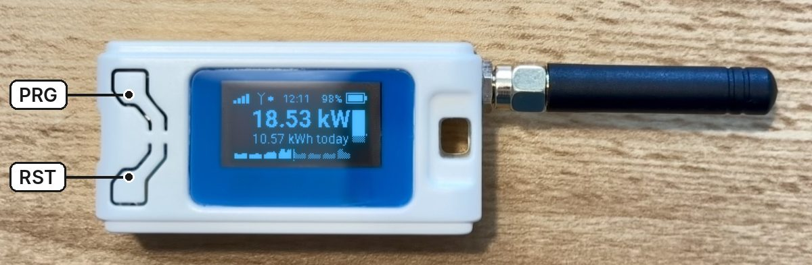

wM-Bus Meter installer
Installs the firmware on a Heltec WiFi LoRa 32 V3 straight from this page. You need Chrome or Edge on a computer, a USB-A to USB-C data cable and the AES key for your meter.
wM-Bus-Zähler installieren
Installiert die Firmware direkt von dieser Seite auf ein Heltec WiFi LoRa 32 V3. Du brauchst Chrome oder Edge auf einem Computer, ein USB-A-auf-USB-C-Datenkabel und den AES-Schlüssel deines Zählers.

Before you start
Get the AES key of your meter from your grid operator. At Linz Netz, activate the customer interface on the Kundenschnittstelle page; the access code you get is the key. Other operators: setup guide, step 1. You can install before you have the key.
Steps
- Connect the board with a USB-A to USB-C data cable and select Connect. Pick the serial port of the board.
- Select Install. If the board ran other firmware before, tick Erase device. It takes about two minutes.
- Enter your Wi-Fi name and password when the page asks for them.
- Select Add to Home Assistant at the end of the install, or open Settings → Devices & services in Home Assistant. Add the new device within 30 minutes of plugging the board in.
- On the device page under Configuration, enter the radio address in New meter address and the AES key in New meter key. The board saves them 60 seconds later. The Meters nearby sensor lists the meters the board hears; yours is marked electricity.
If it does not work
- No port to pick: use another cable (some only charge). On Windows, if the port still does not show up, install the CP210x driver (the “CP210x Universal Windows Driver” download).
- Install fails: the two buttons sit left of the display, PRG at the top and RST at the bottom. Hold PRG, press RST, release PRG, then select Connect again.
- No Wi-Fi prompt: keep the board connected, reload this page, select Connect and then Change Wi-Fi.
- Home Assistant does not find it after 30 minutes: unplug the board and plug it in again.
- Home Assistant asks for an encryption key: close the dialog and restart Home Assistant. If it still asks, install again with Erase device ticked.
Source code, documentation and the other ways to install: github.com/grinser/esphome-wmbus-listener. What the display shows: setup screens.
Bevor du anfängst
Hol dir den AES-Schlüssel deines Zählers beim Netzbetreiber. Bei Linz Netz aktivierst du auf der Seite zur Kundenschnittstelle die Kundenschnittstelle; der Zugangscode, den du bekommst, ist der Schlüssel. Andere Netzbetreiber: Anleitung, Schritt 1 (Englisch). Installieren kannst du auch schon vorher.
Schritte
Das Installationsfenster selbst ist auf Englisch, die Knöpfe heißen deshalb unten so wie dort.
- Schließ das Board mit einem USB-A-auf-USB-C-Datenkabel an und wähl Connect. Such dir den seriellen Anschluss des Boards aus.
- Wähl Install. Lief auf dem Board schon eine andere Firmware, setz das Häkchen bei Erase device. Das dauert etwa zwei Minuten.
- Gib Name und Passwort deines WLANs ein, wenn die Seite danach fragt.
- Wähl am Ende der Installation Add to Home Assistant oder öffne in Home Assistant Einstellungen → Geräte & Dienste. Füg das neue Gerät innerhalb von 30 Minuten nach dem Anstecken hinzu.
- Trag auf der Geräteseite unter Konfiguration die Funkadresse in New meter address und den AES-Schlüssel in New meter key ein. Das Board speichert sie 60 Sekunden später. Der Sensor Meters nearby zeigt die Zähler, die das Board empfängt; deiner ist mit electricity markiert.
Wenn es nicht klappt
- Kein Anschluss zur Auswahl: nimm ein anderes Kabel (manche laden nur). Wenn unter Windows weiterhin kein Anschluss erscheint, installier den CP210x-Treiber (der Download „CP210x Universal Windows Driver“).
- Die Installation schlägt fehl: die zwei Tasten sitzen links neben dem Display, PRG oben und RST unten. Halt PRG gedrückt, drück kurz RST, lass PRG los und wähl dann wieder Connect.
- Keine Frage nach dem WLAN: lass das Board angesteckt, lad die Seite neu, wähl Connect und dann Change Wi-Fi.
- Home Assistant findet es nach 30 Minuten nicht: steck das Board ab und wieder an.
- Home Assistant fragt nach einem Schlüssel: schließ den Dialog und starte Home Assistant neu. Fragt es weiter, installier noch einmal mit Häkchen bei Erase device.
Quellcode, Dokumentation (auf Englisch) und die anderen Wege zur Installation: github.com/grinser/esphome-wmbus-listener. Was das Display zeigt: Einrichtungsanzeigen (Englisch).
FirmwareFirmware · release notesVersionshinweise